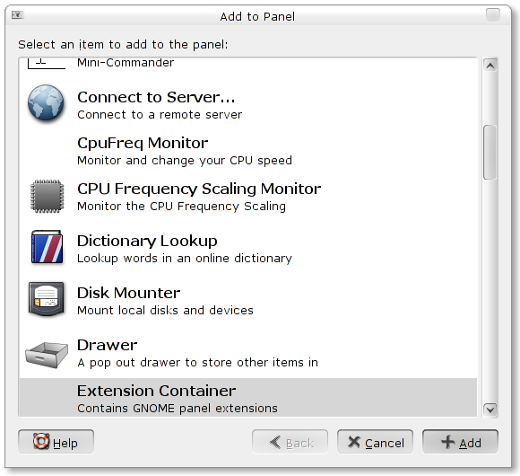
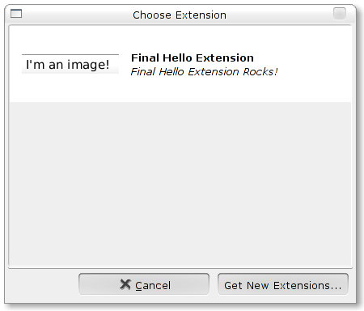

Introduction
GNOME panel extensions are a new type of object for the GNOME panel. Much like the current panel applets they are designed to be easy to write. Unlike any current applets, however, extensions are contained in a single file in the filesystem, and can be distributed without relying on package managers or build tools.
All panel extensions must be written in Python. This is not to slight any other language, in fact, it is entirely possible that support will be added for other languages in the future. Python, however, is an ideal language for this for several reasons:
- First, Python has a very well developed object system which simplifies many aspects of interacting with the container applet and GNOME environment. All panel extensions extend the panel_extension.PanelExtension class and utilize methods provided there to create context menus and correctly create gconf prefixes. Other functions will hopefully be build into panel_extension as they are found to be necessary and/or useful.
- Second, Python has excellent gtk bindings, which makes writing an extension to interact with GNOME very simple. As you will see, these bindings make a simple extension almost trivial.
- Finally, Python is a beautiful language with an elegant and simple syntax (adios, semicolon!) and is rather easy to pick up. Excellent tutorials exist all over the web, and this tutorial will try to be somewhat accessible to the uninitiated. It will be difficult to write your own extensions, however, without at least a passing familiarity with the language.
Because of their single-file nature, extensions, unlike panel applets, can be distributed without a packaging system like apt or yum, and without running any kind of build utilities. Users simply point their web browsers at the panel extensions web site ( http://www.gnome.org/~tvachon at the time of this writing) and download extensions.
At the moment, extensions can only be run through a special container applet. Users add the container applet to the panel like any other applet, and can use the container's interface to choose an extension. Eventually extensions should be integrated into the panel's C-coded interface, but the current system will allow for easy working out of bugs.
Enough boring chatter, let's get to the meat and potatoes: your first panel extension!
Table of ContentsYour First Extension
In the grand tradition of first programs, we present to you the easiest of easy extensions, Hello World:
import pygtk
pygtk.require('2.0')
import gtk
import gobject
import panel_extension
def return_extension():
return HelloExtension()
class HelloExtension(panel_extension.PanelExtension):
def __init__(self):
self.__gobject_init__()
panel_extension.PanelExtension.__init__(self)
def __extension_init__(self):
self.label = gtk.Label("Hello, World!")
self.add(self.label)
self.show_all()
gobject.type_register(HelloExtension)
Nothing to it! Let's go through that slowly to figure it out:
import pygtk
pygtk.require('2.0')
import gtk
import gobject
import panel_extension
This section imports all of the Python modules we'll be needing later in the program. The import pygtk stuff ensures we have the correct version of PyGTK running, which really shouldn't be a problem with a modern desktop distribution of GNOME. Next we get gtk, which we'll soon see is very important, and gobject, which just makes sure the extensions fit nicely into GNOME. The last import is very important, as we'll be basing all of our applets on a class contained in the panel_extension module, panel_extension.PanelExtension.
Where's the she-bang!?
Some of you experienced Pythonista's out there may be wondering why we don't
need a she-bang line. Well, to be frank, this script ain't made for runnin'.
Instead, it will eventually be imported, simplifying the whole "different
locations for Python installations" nastiness.
def return_extension():
return HelloExtension()
ALL EXTENSIONS MUST IMPLEMENT THIS FUNCTION!
Got it? Good. It is very important that extensions implement a return_extension() function which simply returns an initialized copy of the class you are about to define. Easy as pie.
class HelloExtension(panel_extension.PanelExtension):
def __init__(self):
self.__gobject_init__()
panel_extension.PanelExtension.__init__(self)
For anyone unfamiliar with Python, this is simply the beginning of a Python class. Like any good class, HelloExtension initializes its parent, and like any good GObject, HelloExtension calls __gobject_init__. You should make sure your extension includes these two functions in its __init__ function.
Unlike most classes, however, you should not include anything more in the __init__ function! While technically ok, a number of the functions provided by panel_extension.Panelextension will not work correctly if included here. To ensure everything works correctly...
def __extension_init__(self):
self.label = gtk.Label("Hello, World!")
self.add(self.label)
self.show_all()
... just include all of your code in a second function, __extension_init__. __extension_init__ should contain the meat and potatoes of the extension. In this case, we simply create a new label, add it to ourself ("we" in this case, are actually a type of GTK container called a "bin"), and then call self.show_all() to display ourself to the world! Yee ha!
gobject.type_register(HelloExtension)With all that excitement, it would be easy to forget to register ourself. This is an important thing to do, however, as otherwise GTK won't quite work correctly. Just tack this on to the end of your script and you have yourself an extension!
Now that we're done with that, the only thing left to do is use the GNOME Extension Bundle Builder (gebb) to package things up. Before we get into that, however, let's revisit our Hello World Extension and look at a few more features of the panel extension system.
Table of ContentsUsing Two or More Python Scripts
In our first example, we used only one script. This is the script we want to be loaded by the extension container applet and contains all of the necessary instructions to create the appropriate object on the GNOME panel.
It is often the case, however, that we want to seperate our script into more than one piece. Often this is done to create a logical seperation between utility functions and the main script, and often it is simply done to improve the readability and clarity of the script.
To do this, you as the extension writer have two options:
- First, you could require that all users who want to use your extension install an external library or program that provides the necessary modules and scripts in the correct places within your Python installation. When dealing with panel extensions, however, this is a terrible solution, as it runs into the same disadvantages as panel applets, without providing any sort of assurances that the correct packages will, in fact, be installed.
-
The second, and much better, solution is to include your external modules
and scripts in the extension bundle, and simply import them as you
normally would. Thanks to an almost too convenient feature of Python, your
script will be able to use them just as they are, sitting inside the bundle.
Sweet!
To illustrate this, let us assume that we have created a script hello_globals.py containing the following function:
def hello_text():
return "This was imported!"
We can now import use this function in our main script using import hello_globals just like we would in any other Python script:
import pygtk
pygtk.require('2.0')
import gtk
import gobject
import panel_extension
import hello_globals
def return_extension():
return ImportHelloExtension()
class ImportHelloExtension(panel_extension.PanelExtension):
def __init__(self):
self.__gobject_init__()
panel_extension.PanelExtension.__init__(self)
def __extension_init__(self):
self.label = gtk.Label(hello_globals.hello_text())
self.add(self.label)
self.show_all()
gobject.type_register(ImportHelloExtension)
Great! All we have left to do is package everything up and ship it out. For details on that, check out the section on gebb.
Table of ContentsUsing Resources From Inside the Bundle
Seperating data is good, but we could get away with including everything in one script. It would be much more difficult, however, to include things like images and non-Python text files in a single script file. It would be much easier if we could just include these resources in the bundle file and extract them when we want to use them.
The good news is that this is entirely possible, and quite easy. We will, however, need to use a couple features provided to us by the PanelExtension class, as illustrated in the following example:
import pygtk
pygtk.require('2.0')
import gtk
import gobject
import panel_extension
import hello_globals
def return_extension():
return ImportHelloExtension()
class ImportHelloExtension(panel_extension.PanelExtension):
def __init__(self):
self.__gobject_init__()
panel_extension.PanelExtension.__init__(self)
def __extension_init__(self):
bundle = self.get_bundle()
image = bundle.open_gtk_image("hello.png")
self.add(image)
self.show_all()
gobject.type_register(ImportHelloExtension)
Let's look at that slowly:
We first use PanelExtension.get_bundle() to fetch a Python Bundle object representing the bundle file:
bundle = self.get_bundle()
Now that we have a Bundle object, we use its open_gtk_image() function to get a gtk.Image object which we can plug in just like a gtk.Label:
image = bundle.open_gtk_image("hello.png")
self.add(image)
In addition to open_gtk_image, Bundle provides two other methods for fetching items:
Future versions will probably support more functions, but for most cases, Bundle.open() should do the trick.
Table of ContentsUsing Gconf to Store Preferences
At some point during your programming you'll probably want to store preferences in a way that will persist even after you exit GNOME or the extension is removed from the panel. panel_extension.PanelExtension provides a method to simplify this process:
This function can be used as demonstrated in the following example:
import pygtk
pygtk.require('2.0')
import gtk
import gobject
import gconf
import panel_extension
def return_extension():
return ImportHelloExtension()
class ImportHelloExtension(panel_extension.PanelExtension):
def __init__(self):
self.__gobject_init__()
panel_extension.PanelExtension.__init__(self)
def __extension_init__(self):
self.client = gconf.client_get_default()
self.prefs_key = self.get_preferences_key("/gconf_hello_extension")
use_image = self.client.get_bool(self.prefs_key+"/useimage")
if use_image:
bundle = self.get_bundle()
image = bundle.open_gtk_image("hello.png")
self.add(image)
self.client.set_bool(self.prefs_key+"/useimage", False)
else:
label = gtk.Label("I'm text!")
self.add(label)
self.client.set_bool(self.prefs_key+"/useimage", True)
self.show_all()
gobject.type_register(ImportHelloExtension)
Again, let's look at the juicy bits.
We first need to import gconf so we can use it to interact with GNOME's Gconf database. For more information on the Python interface to Gconf, see the PyGTK documentation:
import gconf
The first thing we do is get a Gconf client object, which provides methods to get and set values in the Gconf database.
Next, we use the PanelExtension.get_preferences_key function to get an appropriate preferences key. Note that we must provide a key which we believe will be reasonably unique, as other extensions will be using the same directory in the database. In this case, gconf_hello_extension seems like it should do the trick:
self.client = gconf.client_get_default()
self.prefs_key = self.get_preferences_key("/gconf_hello_extension")
Next, we get a key named useimage from the Gconf database, which we are assuming is a boolean (True or False) type key. The Gconf client provides similar access methods for any type of key that can be stored in the Gconf database:
use_image = self.client.get_bool(self.prefs_key+"/useimage")
Now, if the key we got from the Gconf database was True, we'll display an image and set the key to False. If the key was False, we'll use text and set the key to True. Thus, the extension will alternate between displaying an image and text each time it is loaded!
if use_image:
bundle = self.get_bundle()
image = bundle.open_gtk_image("hello.png")
self.add(image)
self.client.set_bool(self.prefs_key+"/useimage", False)
else:
label = gtk.Label(hello_globals.hello_text())
self.add(label)
self.client.set_bool(self.prefs_key+"/useimage", True)
Using Gconf is easy and fun, but note this key difference from panel applets: Extension preferences will be saved even when they are removed from the panel. This also means that multiple instances of the same extension will share preferences, unless the extension writer deliberately avoids this.
Table of ContentsSetting up a Context Menu
panel_extension.PanelExtension provides two functions to create context menus. Because extensions are displayed using a container applet, this function is tied into the context menu creation functions provided by the library libapplet, which contains functions used to create panel applets.
Thus, because
This justification aside, the next example will attempt to provide a rudimentary introduction to adding custom menu items to an extension's context menu. The first thing to do is create an XML file defining the context menu:
<Root>
<popups>
<popup name="button3">
<menuitem name="Sweet" verb="Sweet" _label="_Sweet..." pixtype="stock" pixname="gnome-stock-about"/>
</popup>
</popups>
</Root>
Next, we can use one of two functions defined in panel_extension.PanelExtension to set up our menu:
verbs : a list of tuples of the form (verb, function) This function creates a context menu from a string containing the menu XML and a list of (verb, function) tuples.
These functions can be used as demonstrated in the following example:
import pygtk
pygtk.require('2.0')
import gtk
import gobject
import panel_extension
def return_extension():
return HelloExtension()
class HelloExtension(panel_extension.PanelExtension):
def __init__(self):
self.__gobject_init__()
panel_extension.PanelExtension.__init__(self)
def __extension_init__(self):
self.bundle = self.get_bundle()
menu_file = self.bundle.open("hello.xml")
self.setup_extension_menu_from_file (menu_file,
[("Sweet", self._sweet),])
self.label = gtk.Label("Hello, World!")
self.add(self.label)
self.show_all()
def _sweet(self, uicomponent, verb):
self.label.set_text("Sweet!")
gobject.type_register(HelloExtension)
Let's look at that briefly:
The important function is the setup_extension_menu_from_file function from panel_extension.PanelExtension. The first parameter is simply a file-like object containing the menu XML. The second is a bit trickier: it is a list of tuples of the form (verb, function), where verb is the verb specified in the menu XML corresponding to the button you would like to associate with the specified function. Since in the menu XML we gave the "Sweet" button a verb of "Sweet", and we would like to associate this button with the function self._sweet, we make the following function call:
self.setup_extension_menu_from_file (menu_file,
[("Sweet", self._sweet),])
Now our function self._sweet can do almost anything it likes, in this case, simply change the text of the label.
def _sweet(self, uicomponent, verb):
self.label.set_text("Sweet!")
For more information on Bonobo UI XML, please consult the Bonobo UI documentation.
Table of ContentsThe GNOME Extension Bundle Builder (gebb)
You've created your extension script and assembled your resource files, but it's all for nothing until you bundle them all up for the container applet to use.
Fortunately, gebb is your man. gebb not only builds an extension bundle, it is also used to build the XML file that specifies the various files to pack in and how they should be used. To build a bundle, simply go to the directory containing the files you would like to bundle up, add each file to a "manifest.xml" file in that directory using gebb, and run gebb build <bundle name> where <bundle name> is the name of the bundle file you want to build. One important thing to remember is that all bundle files must have a ".gpe" ending. If they do not, they simply will not be recognized by the container applet, and cannot be loaded.
Before we present a short example of using gebb, let us first run through gebb's command structure.
gebb has the following syntax:
gebb [options] <command> [command-options-and-arguments]
Where <command> can be any of the following:
Example
We have created an extension using a script named finalextension.py as follows:
import pygtk
pygtk.require('2.0')
import gtk
import gobject
import gconf
import panel_extension
import hello_globals
def return_extension():
return ImportHelloExtension()
class ImportHelloExtension(panel_extension.PanelExtension):
def __init__(self):
self.__gobject_init__()
panel_extension.PanelExtension.__init__(self)
def __extension_init__(self):
self.bundle = self.get_bundle()
menu_file = self.bundle.open("hello.xml")
self.setup_extension_menu_from_file (menu_file,
[("Sweet", self._sweet),])
self.client = gconf.client_get_default()
self.prefs_key = self.get_preferences_key("/final_hello_extension")
use_image = self.client.get_bool(self.prefs_key+"/useimage")
if use_image:
image = self.bundle.open_gtk_image("hello.png")
self.add(image)
self.client.set_bool(self.prefs_key+"/useimage", False)
else:
self.label = gtk.Label(hello_globals.hello_text())
self.add(self.label)
self.client.set_bool(self.prefs_key+"/useimage", True)
self.show_all()
def _sweet(self, uicomponent, verb):
try:
self.label.set_text("Sweet!")
except:
pass
gobject.type_register(ImportHelloExtension)
First, we move to the directory containing the files we would like to include in the bundle:
$ ls finalhello.py hello_globals.py hello.png hello.xml icon.png
Next, we add the our files to the manifest:
$ gebb add-main finalhello.py $ gebb add hello_globals.py hello.xml hello.png $ gebb add-icon icon.png
Now we set a name and description:
$ gebb set-name Final Hello Extension $ gebb set-desc Final Hello Extension Rocks!
Finally, we build everything into one big bundle:
$ gebb build finalextension.gpe Built finalextension.gpe.
We can also run gebb with the -v flag to get more information:
$ gebb -v build finalextension.gpe init file: name = "Final Hello Extension" description = "Final Hello Extension Rocks!" main_script = "finalhello" icon = "icon.png" Built finalextension.gpe. finalextension.gpe contains ['finalhello.py', 'hello_globals.py', 'hello.xml', 'hello.png', 'icon.png', '__bundle_init__.py', 'manifest.xml']
Voila! We now have a panel extension bundle. We can move it into the ~/.panelextensions directory and use the container applet to add it to the panel:
$ cp finalextension.gpe ~/.panelextensions/ 
Success!
Table of ContentsDebugging
Unfortunately, debugging panel extensions is a bit of a black art. Probably the best idea is to create test functions to make sure each of the pieces work correctly.
There will still be situations in which is is necessary to get some sort of output when the extension is added to the panel. In these situations you have two options:
First, you can define a log file somewhere on the file system and have all output (including error message) go to it. If, for example, your log file is at /tmp/log.txt the following function should do the trick:
import sys
out = open('/tmp/log.txt', 'w+')
sys.stdout = out
sys.stderr = out
Second, if you really need to get arcane, you can actually run the extension container applet from the command line before you add it to the panel. For example, if extension_container_applet.py is at /usr/lib/gnome-panel/extension_container_applet.py, run
/usr/lib/gnome-panel/extension_container_applet.py
before you add the container applet to the panel. Note that this will not work if there are any copies of the container applet currently on the panel.